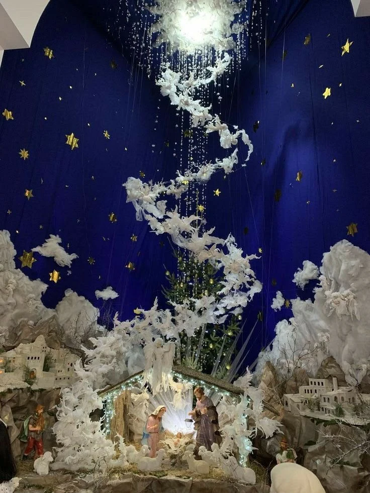
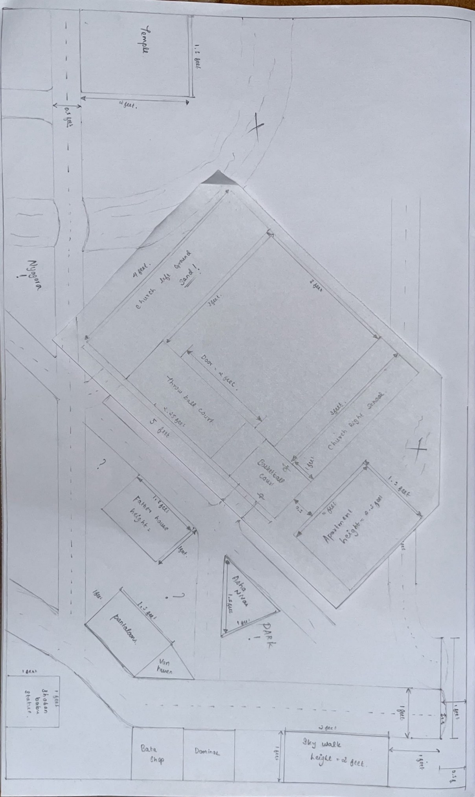
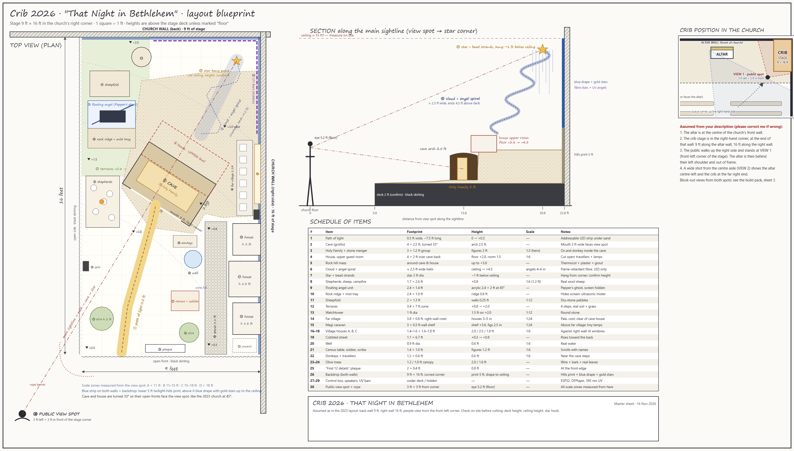
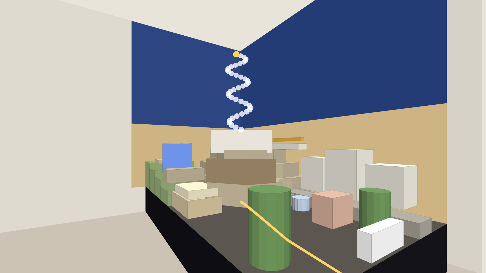
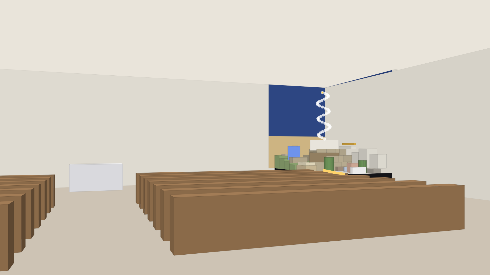
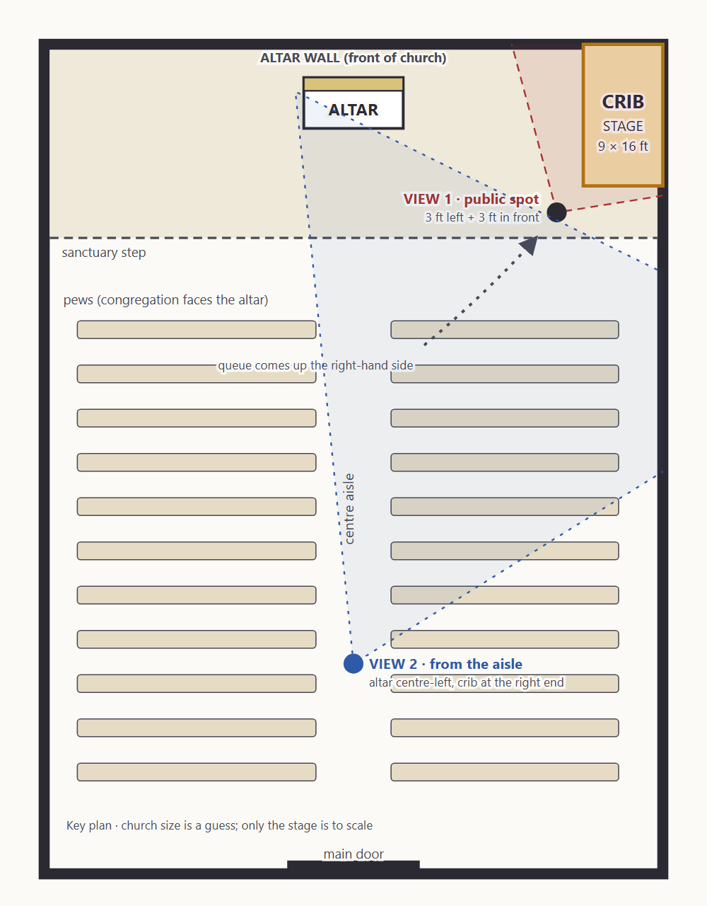
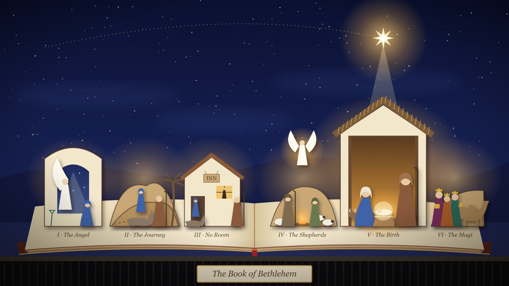
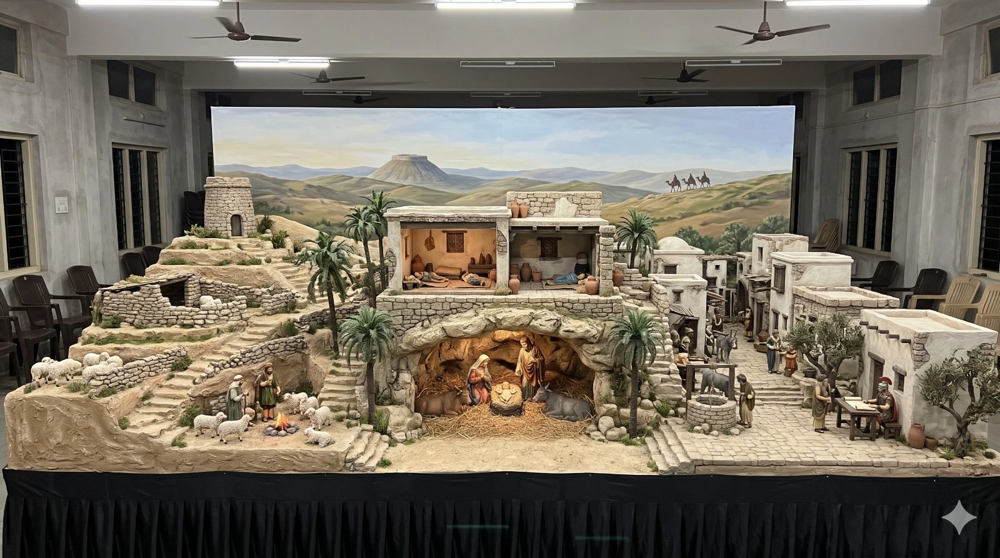

One folder per year
Each crib is a folder: its layout, its photos, what it cost, what we learned. Add a new folder every year.

2023
The neighbourhood in miniature: church at 45° with the temple, courts, shops and skywalk.
+That Night in Bethlehem
A cave under a crowded guest room, shepherds, a census and a four-minute light show.
+
Next year
Copy the 2026 folder, update CLAUDE.md, and the archive keeps growing.
+The first layout
The 2023 crib was drawn as a map of the neighbourhood: the church turned 45°, with the temple, throw-ball and basketball courts, the apartment, a father's house, Asha Nivas, the shops and a skywalk. This sheet is the layout we built from. The final photo and the two hand sketches are not in the repo yet; add them to 2023/.

That Night in Bethlehem
The 2026 plan, from one blueprint: where the crib sits in the church, what visitors see from the public spot, and every part.





